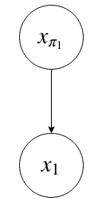
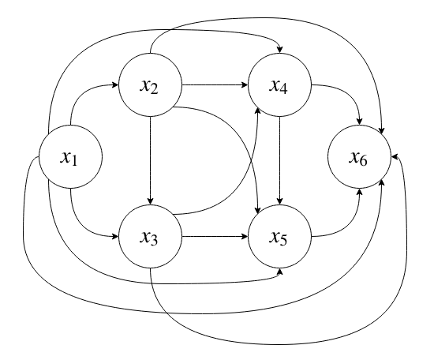
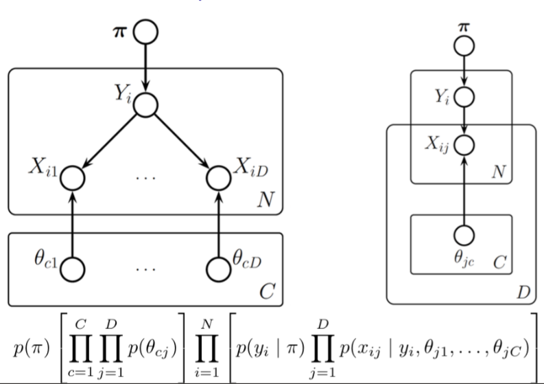
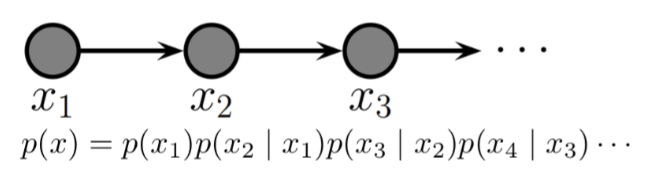
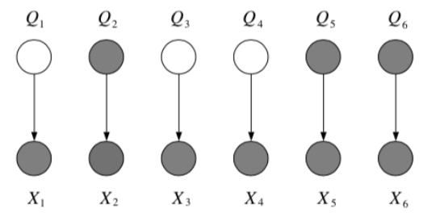
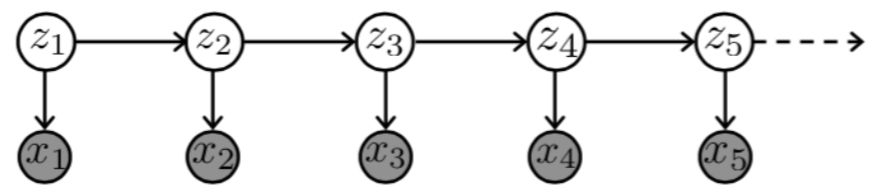

Week 3: Directed Graphical Models¶
Assigned Reading¶
- Murphy: Chapters 10-12 (excluding * sections)
- Kevin Murphy's page on graphical models
- Roger Grosse's slides on backprop
Overview¶
- Graphical notations
- Conditional independence
- Bayes Balls
- Latent variables
- Common motifs
Graphical model notation¶
The joint distribution of N random variables can be computed by the chain rule
this is true for any joint distribution over any random variables.
More formally, in probability the chain rule for two random variables is
and for N random variables
Note
Note that this is a bit of an abuse of notation, but p(x_k | \cap^{k-1}_{j=1} x_j) will collpase to p(x_1) when k = 1.
Graphical, we might represent a model
as

where
- nodes represent random variables
- arrows mean "conditioned on", e.g. "x_i is conditioned on x_{\pi_1}".
For example, the graphical model p(x_{1, ..., 6}) is represented as

This is what the model looks like with no assumptions on the conditional dependence between variables (said otherwise, we assume full conditional dependence of the joint distribution as per the chain rule). This model will scale poorly (exponential with the number of parameters, or k^n where k are states and n are random variables, or nodes.).
We can simplify the model by building in our assumptions about the conditional probabilities. More explicitly, a directed graphical model implies a restricted factorization of the joint distribution.
Conditional Independence¶
Let X be the set of nodes in our graph (the random variables of our model), then two (sets of) variables X_A, X_B are conditionally independent given a third variable X_C
\[(X_A \perp X_B | X_C)\]
if
for all X_c.
Note
\star\star is especially important, and we use this several times throughout the lecture.
Only a subset of all distributions respect any given (nontrivial) conditional independence statement. The subset of distributions that respect all the CI assumptions we make is the family of distributions consistent with our assumptions. Probabilistic graphical models are a powerful, elegant and simple way to specify such a family.
Directed acyclic graphical models (DAGM)¶
A directed acyclic graphical model over N random variables looks like
where x_i is a random variable (node in the graphical model) and x_{\pi_i} are the parents of this node. In other words, the joint distribution of a DAGM factors into a product of local conditional distributions, where each random variable (or node) is conditionally dependent on its parent node(s), which could be empty.
Tip
The Wikipedia entry on Graphical models is helpful, particularly the section on Bayesian networks.
Notice the difference between a DAGM and the chain rule for probability we introduced early: we are conditioning on parent nodes as opposed to every node. Therefore, the model that represents this distribution is exponential in the fan-in of each node (the number of nodes in the parent set), instead of in N.
Independence assumptions on DAGMs¶
Lets look again at the graphical model p(x_{1, ..., 6}) we introduced above.
First, lets sort the DAGM topologically. The conditional independence of our random variables becomes
so random variables x_i and x_{\widetilde{\pi_i}} are conditionally independent of each other but conditionally dependent on their parent nodes x_{\pi_i}.
Note
To topological sort or order a DAGM means to sort all parents before their children.
Lastly, lets place some assumptions on the conditional dependence of our random variables. Say our model looks like

What have the assumptions done to our joint distribution represented by our model?
Cleary our assumptions on conditional independence have vastly simplified the model.
Now Suppose each is x_i is a binary random variable. Our assumptions on conditional independence also reduce the dimensionality of our model

Missing Edges¶
Missing edges imply conditional independence. Recall that from the chain rule, we can get (for any joint distribution)
If our joint distribution is represented by a DAGM, however, then some of the conditioned variables can be dropped. This is equivalent to enforcing conditional independence.
D-Separation¶
D-separation, or directed-separation is a notion of connectedness in DAGMs in which two (sets of) variables may or may not be connected conditioned on a third (set of) variable(s); where D-connection implies conditional dependence and d-separation implies conditional independence.
In particular, we say that
if every variable in A is d-separated from every variable in B conditioned on all the variables in C. We will look at two methods for checking if an independence is true: A depth-first search algorithm and Bayes Balls.
DFS Algorithm for checking independence¶
To check if an independence is true, we can cycle through each node in A, do a depth-first search to reach every node in B, and examine the path between them. If all of the paths are d-separated, then we can assert
Thus, it will be sufficient to consider triples of nodes.
Note
It is not totally clear to me why it is sufficient to consider triples of nodes. This is simply stated "as is" on the lecture slides.
Lets go through some of the most common triples.
Tip
It was suggested in class that these types of examples make for really good midterm questions!
1. Chain

Question: When we condition on y, are x and z independent?
Answer:
From the graph, we get
which implies
\therefore P(z | x, y) = P(z | y) and so by \star\star, x \bot z | y.
Tip
It is helpful to think about x as the past, y as the present and z as the future when working with chains such as this one.
2. Common Cause

Where we think of y as the "common cause" of the two independent effects x and z.
Question: When we condition on y, are x and z independent?
Answer:
From the graph, we get
which implies
\therefore P(x, z| y) = P(x|y)P(z|y) and so by \star, x \bot z | y.
3. Explaining Away

Question: When we condition on y, are x and z independent?
Answer:
From the graph, we get
which implies
\therefore P(z | x, y) \not = P(z|y) and so by \star\star, x \not \bot z | y.
In fact, x and z are marginally independent, but given y they are conditionally independent. This important effect is called explaining away (Berkson’s paradox).
Example
Imaging flipping two coins independently, represented by events x and z. Furthermore, let y=1 if the coins come up the same and y=0 if they come up differently. Clearly, x and z are independent, but if I tell you y, they become coupled!
Bayes-Balls Algorithm¶
An alternative algorithm for determining conditional independence is the Bayes Balls algorithm. To check if x_A \bot x_B | x_C we need to check if every variable in A is d-seperated from every variable in B conditioned on all variables in C. In other words, given that all the nodes in x_C are "clamped", when we "wiggle" nodes x_A can we change any of the nodes in x_B?
In general, the algorithm works as follows: We shade all nodes x_C, place "balls" at each node in x_A (or x_B), let them "bounce" around according to some rules, and then ask if any of the balls reach any of the nodes in x_B (or x_A).
The rules are as follows:

including the boundary rules:

where arrows indicate paths the balls can travel, and arrows with bars indicate paths the balls cannot travel.
Note
Notice balls can travel opposite to edge directions!
Here’s a trick for the explaining away case: If y or any of its descendants is shaded, the ball passes through.

Canonical Micrographs¶
For reference, here are some canonical micrographs and the Bayes Balls algorithmic rules that apply to them

Tip
See this video for an easy way to remember all the rules.
Examples¶
Question: In the following graph, is x_1 \bot x_6 | \{x_2, x_3\}?

Answer:
Yes, by the Bayes Balls algorithm.

Question: In the following graph, is x_2 \bot x_3 | \{x_1, x_6\}?

Answer:
No, by the Bayes Balls algorithm.

Plates¶
Because Bayesian methods treat parameters as random variables, we would like to include them in the graphical model. One way to do this is to repeat all the iid observations explicitly and show the parameter only once. A better way is to use plates, in which repeated quantities that are iid are put in a box

Plates are like “macros” that allow you to draw a very complicated graphical model with a simpler notation. The rules of plates are simple: repeat every structure in a box a number of times given by the integer in the corner of the box (e.g. N), updating the plate index variable (e.g. n) as you go. Duplicate every arrow going into the plate and every arrow leaving the plate by connecting the arrows to each copy of the structure.

Nested Plates¶
Plates can be nested, in which case their arrows get duplicated also, according to the rule: draw an arrow from every copy of the source node to every copy of the destination node.

Plates can also cross (intersect), in which case the nodes at the intersection have multiple indices and get duplicated a number of times equal to the product of the duplication numbers on all the plates containing them.
Example of a DAGM: Markov Chain¶
Markov chains are a stochastic model describing a sequence of possible events in which the probability of each event depends only on the state attained in the previous event.

In other words, it is a model that satisfies the Markov property, i.e., conditional on the present state of the system, its future and past states are independent.

Warning
I don't really understand the difference between the two models given on the slides (and shown above). Are they both Markov chains? In the second model, the probability of an event depends not just on the previous node but on the previous node of the previous node. Jesse went over this only very briefly in lecture.
Unobserved Variables¶
Certain variables in our models may be unobserved (Q in the example given below), either some of the time or always, at training time or at test time.

Note
Graphically, we will use shading to indicate observation
Partially Unobserved (Missing) Variables¶
If variables are occasionally unobserved then they are missing data, e.g., undefined inputs, missing class labels, erroneous target values. In this case, we can still model the joint distribution, but we define a new cost function in which we sum out or marginalize the missing values at training or test time
\[\ell(\theta ; \mathcal D) = \sum_{\text{complete}} \log p(x^c, y^c | \theta) + \sum_{\text{missing}} \log p(x^m | \theta)\] \[= \sum_{\text{complete}} \log p(x^c, y^c | \theta) + \sum_{\text{missing}} \log \sum_y p(x^m, y | \theta)\]
Note
Recall that p(x) = \sum_q p(x, q).
Latent variables¶
What to do when a variable z is always unobserved? Depends on where it appears in our model. If we never condition on it when computing the probability of the variables we do observe, then we can just forget about it and integrate it out.
E.g., given y, x fit the model p(z, y|x) = p(z|y)p(y|x, w)p(w). In other words if it is a leaf node.
However, if z is conditioned on, we need to model it.
E.g. given y, x fit the model p(y|x) = \sum_z p(y|x, z)p(z).

Where do latent variables come from?¶
Latent variables may appear naturally, from the structure of the problem (because something wasn’t measured, because of faulty sensors, occlusion, privacy, etc.). But we also may want to intentionally introduce latent variables to model complex dependencies between variables without looking at the dependencies between them directly. This can actually simplify the model (e.g., mixtures).

Mixture models¶
Think about the following two sets of data, and notice how there is some underlying structure not dependent on x.

The most basic latent variable model might introduce a single discrete node, z, in order to better model the data. This allows different submodels (experts) to contribute to the (conditional) density model in different parts of the space (known as a mixture of experts).
Note
The basic idea is to divide & conquer: use simple parts to build complex models (e.g., multimodal densities, or piecewise-linear regressions).
Mixture densities¶
What if the class is unobserved? Then we sum it out
where the mixing proportions, \alpha_k sum to 1, i.e. \sum_k\alpha_k = 1. We can use Bayes' rule to compute the posterior probability of the mixture component given some data:
these quantities are called responsibilities.
Example: Gaussian Mixture Models¶
Consider a mixture of K Gaussian componentns

- Density model: p(x | \theta) is a familiarity signal.
- Clustering: p(z | x, \theta) is the assignment rule, - \ell(\theta) is the cost.
Warning
I didn't really understand this example.
Example: Mixtures of Experts¶
Mixtures of experts, also known as conditional mixtures are exactly like a class-conditional model, but the class is unobserved and so we sum it out:
where \sum_k \alpha_k (x) = 1 \; \forall x. This is a harder problem than the previous example, as we must learn \alpha(x), often called the gating function (unless we chose z to be independent of x). However, we can still use Bayes' rule to compute the posterior probability of the mixture components given some data:
Example: Mixtures of Linear Regression Experts¶
In this model, each expert generates data according to a linear function of the input plus additive Gaussian noise
where the gating function can be a softmax classifier
Remember: we are not modeling the density of the inputs x.
Gradient learning with mixtures¶
We can learn mixture densities using gradient descent on the likelihood as usual.
In other words, the gradient is the responsibility weighted sum of the individual log likelihood gradients
Tip
We used two tricks here to derive the gradient, \frac{\partial \log f(\theta)}{\partial \theta} = \frac{1}{f(\theta)} \cdot \frac{\partial f(\theta)}{\partial \theta} and \frac{\partial f(\theta)}{\partial \theta} = f(\theta) \cdot \frac{\partial \log f(\theta)}{\partial \theta}
Hidden Markov Models (HMMs)¶
Hidden Markov Model (HMM) is a statistical Markov model in which the system being modeled is assumed to be a Markov process with unobserved (i.e. hidden) states. It is a very popular type of latent variable model

where
- Z_t are hidden states taking on one of K discrete values
- X_t are observed variables taking on values in any space
the joint probability represented by the graph factorizes according to
Appendix¶
Useful Resources¶
- Metacademy lesson on Bayes Balls. In fact, that link will bring you to a short course on a couple important concepts for this corse, including conditional probability, conditional independence, Bayesian networks and d-separation.
- A video on how to memorize the Bayes Balls rules (this is linked in the above course).